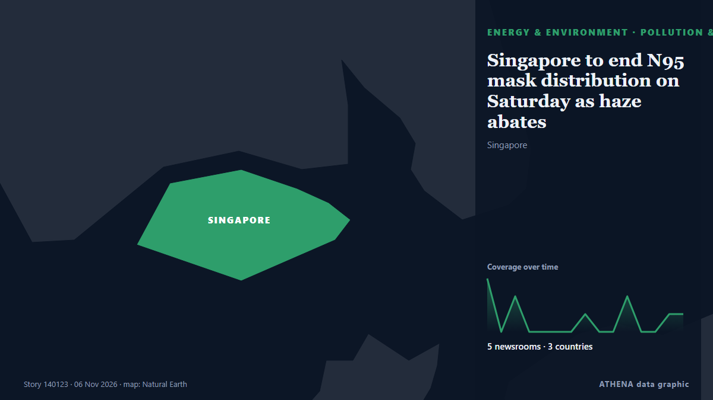

Энергетика, ресурсы и экология
СпонсорПри поддержке  Cybernetics and Artificial Intelligence Lab Welcome to the Cybernetics and Artificial Intelligence Laboratory, established at the Department of Business Administration of the National and Kapodistrian University of Athens. The lab is headed by Professor Dimitrios Thomakos. The lab aims to do research that can be published in top venues. Our research uses tools and methods of Artificial Intelligence, and lies in the following areas: - Forecasting - Decision making - Cyber security - Finance We are always looking forward to collaborating with exceptional students!
Cybernetics and Artificial Intelligence Lab Welcome to the Cybernetics and Artificial Intelligence Laboratory, established at the Department of Business Administration of the National and Kapodistrian University of Athens. The lab is headed by Professor Dimitrios Thomakos. The lab aims to do research that can be published in top venues. Our research uses tools and methods of Artificial Intelligence, and lies in the following areas: - Forecasting - Decision making - Cyber security - Finance We are always looking forward to collaborating with exceptional students!
Заголовки приводятся на английском языке, как они были опубликованы.

Загрязнение и биоразнообразиеSingapore to end N95 mask distribution on Saturday as haze abates
The Ministry of Health will deactivate both the Public Health Preparedness Clinic Scheme and the Haze Subsidy Scheme from Nov 12. из CNA (Channel NewsAsia)
| 24 окт. | 38 |
|---|---|
| 25 окт. | 69 |
| 26 окт. | 79 |
| 27 окт. | 113 |
| 28 окт. | 89 |
| 29 окт. | 76 |
| 30 окт. | 94 |
| 31 окт. | 39 |
| 1 нояб. | 54 |
| 2 нояб. | 120 |
| 3 нояб. | 92 |
| 4 нояб. | 97 |
| 5 нояб. | 90 |
| 6 нояб. | 38 |
Global renewable energy capacity to increase by 4,800 GW in 2026–2031
Developing countries match rich world amid Iran energy shock that fails to stir EU into action. из Euractiv
‘We will not lower our ambition’: Türkiye’s Kurum urges climate action ahead of COP31
Murat Kurum urges countries to deliver on climate finance pledges and accelerate electrification as Türkiye prepares to host the UN summit in Antalya. из TRT World
Brent oil price benchmark set for biggest weekly drop since 2020
LONDON: Oil prices were set for a sharp weekly fall after the election losses of US President Donald Trump's Republican Party raised hopes of a de-escalation in the US-Israeli war on Iran and a stock… из New Straits Times
Oil prices rebound as US results, Iran war shape markets
Oil prices rose on Friday, recovering some of their recent losses after a turbulent week marked by the US midterm elections and uncertainty over the course of the war between the U... из Oman Observer
Turkey says gas pipeline project with Turkish Cypriots can provide power to whole island
Turkish Energy Minister Alparslan Bayraktar said a planned natural gas pipeline linking Turkey and the breakaway Turkish Cypriot community could eventually provide power to the entire ethnically… из Cyprus Mail
Gas deposits off Cyprus are an opportunity for the EU, president says
Cyprus's president says natural gas deposits off the country's coast offer the European Union a chance to boost energy security by diversifying supply. из ABC News (International)
Australia to join Indonesia’s wildfire waterbombing operations
Australia will join Indonesia’s efforts to control wildfires, utilizing aircraft to assist in waterbombing operations. из Arab News
‘Blue Tsunami’ to ‘Dem-olition’: How the world covered US midterm results
Even voters in areas that have repeatedly backed US President Donald Trump are no longer on board with the Republican Party, writes Jackie Fox. из RTÉ News
90 mil. displaced people at risk from climate threats, UN refugee agency says
Nearly 90 million forcibly displaced people are living in countries increasingly exposed to climate-related droughts, floods and extreme heat, the UN refugee agency said on Friday, warning ahead of… из The Korea Times
Brazil wraps up COP30 with fossil fuel, forest roadmaps, urging shift from talks to action
'We don't need more negotiations. What we need is for governments to start taking action,' says COP30 president Correa do Lago, who led last November's UN climate summit in Belem. из Rappler
Worley Lands EPC Contract for Venture Global's CP2 LNG Expansion
Worley has signed a reimbursable engineering, procurement and construction (EPC) contract with Venture Global for the CP2 Expansion project in Louisiana, United States… из Offshore Engineer
Namibia: Dangote Promises Cheaper Fuel for Namibia...Launches N$41.6b Pipeline Project in Walvis
[New Era] Walvis Bay -- Namibians could see a significant reduction in fuel prices when the Dangote Namibia Tank Farm and Regional Pipeline project becomes operational. из AllAfrica
Mother, daughter killed in suspected grizzly bear attack in Canada
2 women were reported missing after they failed to return from afternoon walk, says media report. из Anadolu Agency (English)
Injury in Adygea, fire in Krasnodar Region, 142 drones downed: aftermath of new attacks
A Gorlovka resident was injured in a Ukrainian drone attack in the Tsentralno-Gorodskoy District. из TASS (English)
Saudi Arabia braces for thunderstorms, flash floods across most regions through Tuesday
RIYADH: Thunderstorms, potentially heavy rainfall and flash floods are forecast across most regions of Saudi Arabia through Tuesday, prompting Civil Defense authorities to urge residents to exercise… из Arab News
Brent crude oil price exceeds $100
Oil prices experienced a decline of over 1% after hitting six-month peaks, primarily due to geopolitical unrest in Saudi Arabia. из Times of India
Ukrainian forces have rendered 15 of 38 main Russian oil refineries inoperable
Attacks by Ukrainian forces have shut down 15 major Russian refineries and forced 12 others to cut production, triggering domestic fuel supply shortages. из Ukrainska Pravda (English)
Gaza turns rubble into power with homemade wind turbines
Above a maze of tents in a crowded displacement camp in Gaza, homemade wind turbines made from scrap metal and salvaged debris spin in the sea breeze, bringing electricity to struggling Palestinians. из Al-Monitor
Wärtsilä Helps Chevron Cut Methane Emissions with LNG Carriers Upgrade
Wärtsilä has completed the conversion of one engine on each of three LNG carriers operated by Chevron Transport Corporation from dual-fuel to spark gas operation, as part of a project aimed at… из MarineLink
Final Turbine Stands Tall at 760MW Ecowende Wind Farm
All 52 wind turbines have been installed at the 760 MW Ecowende offshore wind farm in the Dutch North Sea, bringing the project into its final construction phase… из Offshore Engineer
International News: UN report warns developing countries need $305 billion annually for Climate Adaptation
By Zoila Palma: Developing countries will need an estimated $305 billion annually by 2035 to adapt to the worsening impacts of climate change, nearly 10 times the amount they currently receive from… из Breaking Belize News
Syria says it foiled Hezbollah plot to attack Homs oil refinery
Nov 3 - Syrian security forces have arrested members of a cell linked to Lebanese Iran-backed militant group Hezbollah accused of planning to attack the Homs oil refinery in central Syria, state news… из The Straits Times
StormGeo Partners with China Classification Society to Advance Digital Emissions Verification in China
StormGeo, a provider of weather intelligence and maritime technology and part of Alfa Laval’s Ocean Division, has joined forces with the China Classification Society (CCS) to help digitalize… из MarineLink
Colombia Backs Venezuela Gas Pipeline Repair
Colombia named its Venezuela gas pipeline a strategic project on 4 November, but a US Treasury sanctions licence still decides if gas can flow. из The Rio Times
Water supply disruptions return in Kyiv, metro service temporarily suspended due to power fluctuations
Kyivvodokanal, the municipal utility responsible for water supply and wastewater services in Kyiv and the surrounding region, said at around 1:30 p.m. local time that power outages at its facilities… из Kyiv Independent
Oil and European Gas Prices Fall After Democrats’ Midterm Gains in US
Oil and European natural gas prices fell sharply after Democrats made major gains in the US midterm elections, raising hopes that Washington could seek an end to the conflict with Iran. из Greek Reporter
One of Three Russian Tankers Remains On Course for the US
Only one of the three reported tankers that were sailing to the U.S. with Russian diesel appears to be still heading for the Atlantic coast.The issuing of General License 135 on October 9, which… из MarineLink
Antalya green zone to serve as COP31 climate action hub
Türkiye is creating a 582,000-square-meter Green Zone in the southern province of Antalya for the COP31 climate summit to connect everyday citizens, entrepreneurs, and businesses through actionable… из Hürriyet Daily News
Singapore to toughen haze law with arrest powers, bigger fines
SINGAPORE: Singapore’s parliament moved on Wednesday to toughen its anti-haze law with arrest powers, bigger fines and potential restrictions on companies linked to transboundary air pollution from… из New Straits Times
US election results could put renewables back into focus, executive says
The US midterm election results has brought back hope for renewables after the Trump administration's "attacks" on clean energy, according to a sustainable energy executive. из The National
Brazil Factory Prices Jump 4.34% in a Year
Brazil's producer prices rose 4.34% in the year to September and 1.54% in the month, well above forecasts, a warning for inflation and interest rates. из The Rio Times
CVR Energies set to buy two Marathon refineries
CVR Energy has entered into a definitive agreement with subsidiaries of Marathon Petroleum to acquire Marathon’s St. из Ship.Energy
Borr Drilling Prospector 5 Rig Incident Update
Borr Drilling Limited provides an update on the Prospector 5 incident offshore Gabon, first announced by the Company on October. из Cyprus Shipping News
Six measures could save 1.6m lives a year: WHO
The WHO report said implementing six measures could deliver a 'triple dividend' of healthier people, lower emissions and stronger economies. из Free Malaysia Today